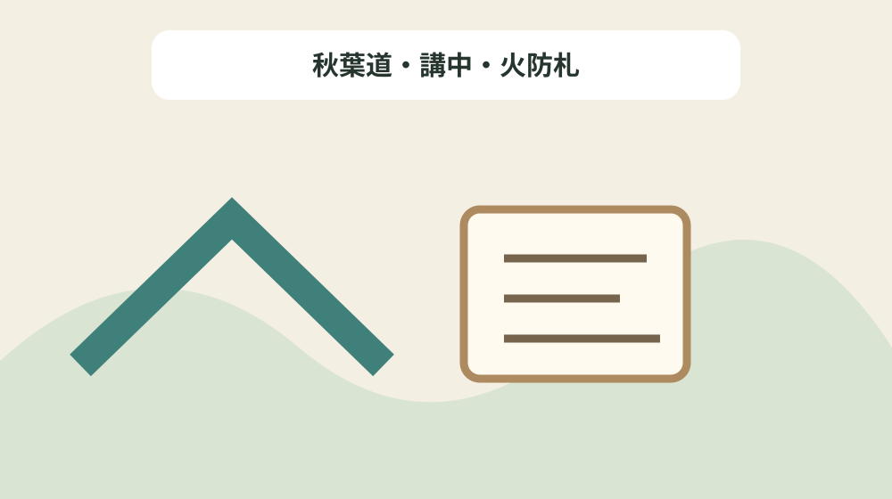
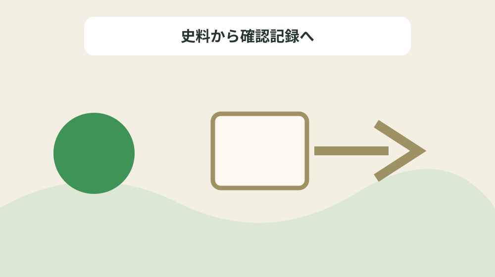

森町の秋葉講を講組織・代参・道標・火防札で読む
結論：信仰内容、講の運営、代参経路、遺物の所在を混同せず残すことで、資料の記載と現在の状態を混同しない秋葉講史料経路台帳になります。
秋葉講史料経路台帳で解く問い
森町公式資料には「秋葉山(秋葉寺(しゅうようじ)とその守護神・三尺坊大権現)が火防の神として有名になったのは、江戸時代に入ってからである。」と記されています。森町の秋葉講を講組織・代参・道標・火防札で読むでは、この記載を秋葉講史料経路台帳の一行にし、信仰内容、講の運営、代参経路、遺物の所在を混同せず残すための根拠として扱います。資料名と確認日を先に書き、後から説明だけが独り歩きしないようにします。
同じページで確認できる「(1)秋葉山の図。坂下から山頂にかけては雲がかかり距離が省かれている。 (森町天宮 個人所蔵)」は、前の事実と似ていても別の対象です。秋葉道・講中・火防札を読み解くときは、資料の掲載順ではなく、名称・年代・場所・根拠の対応を見ます。写真、家族の記憶、公的資料を三列に分け、食い違いを未確認として残します。
秋葉講史料経路台帳では「村人の手によって毎夜灯明がともされ、道行く人の便も図られた。」の確認欄と「(2)秋葉山常夜灯。元は、蓮華寺の出先にあったが、蓮華寺安住院の下に引移したものである。 内部の常夜灯籠は瓦製で、1813年(文化10年)のヘラ書きがみえ、サヤ堂は再建されたものである。 町内に残るサヤ堂の設計は、切妻(きりづま)や美濃甲の破風(はふ)のものがほとんどで、浜北市に残る宝形造りや入母屋のものは残存しない。 各村々に一基は建てられていたが、昭和19年の東南海地震で大破したところが多い。(森町森 大門)」の照会欄を分けます。公式本文が述べていない現況や公開可否は未確認と書き、家族の記憶には話者と聞取日を添えます。旧記録を消さず、回答日と確認先を付けた新しい行を追加します。
公式本文から確定できる十二事実
森町公式資料には「森町村は秋葉道の中核的宿場として、人馬の継立て、生活用品の集散地、六斎市(ろくさいいち)(3と9の日、月6回の市)も開かれ、往還(おうかん)沿いは商家を連ね、旅籠屋(はたごや)も多かった。」と記されています。森町の秋葉講を講組織・代参・道標・火防札で読むでは、この記載を秋葉講史料経路台帳の一行にし、信仰内容、講の運営、代参経路、遺物の所在を混同せず残すための根拠として扱います。主語と対象を原文へ戻し、似た地名や人物を同じものとして扱いません。
同じページで確認できる「表−10 森町域に現存する秋葉山常夜灯の分布表」は、前の事実と似ていても別の対象です。秋葉道・講中・火防札を読み解くときは、資料の掲載順ではなく、名称・年代・場所・根拠の対応を見ます。資料の利点は典拠へ戻れることにあり、現在の状態を保証するものではありません。
秋葉講史料経路台帳では「(1)秋葉山の図。坂下から山頂にかけては雲がかかり距離が省かれている。 (森町天宮 個人所蔵)」の確認欄と「西組、上橘、粟倉(八雲神社)」の照会欄を分けます。公式本文が述べていない現況や公開可否は未確認と書き、家族の記憶には話者と聞取日を添えます。不動産の道路、境界、登記、建物安全性は、この歴史資料とは別に調べます。
秋葉講史料経路台帳の列を決める
森町公式資料には「(2)秋葉山常夜灯。元は、蓮華寺の出先にあったが、蓮華寺安住院の下に引移したものである。 内部の常夜灯籠は瓦製で、1813年(文化10年)のヘラ書きがみえ、サヤ堂は再建されたものである。 町内に残るサヤ堂の設計は、切妻(きりづま)や美濃甲の破風(はふ)のものがほとんどで、浜北市に残る宝形造りや入母屋のものは残存しない。 各村々に一基は建てられていたが、昭和19年の東南海地震で大破したところが多い。(森町森 大門)」と記されています。森町の秋葉講を講組織・代参・道標・火防札で読むでは、この記載を秋葉講史料経路台帳の一行にし、信仰内容、講の運営、代参経路、遺物の所在を混同せず残すための根拠として扱います。年号の横へ出来事を示す動詞を残し、制作年と伝来年を一つにしません。
同じページで確認できる「森町村は秋葉道の中核的宿場として、人馬の継立て、生活用品の集散地、六斎市(ろくさいいち)(3と9の日、月6回の市)も開かれ、往還(おうかん)沿いは商家を連ね、旅籠屋(はたごや)も多かった。」は、前の事実と似ていても別の対象です。秋葉道・講中・火防札を読み解くときは、資料の掲載順ではなく、名称・年代・場所・根拠の対応を見ます。不足する情報を空欄の理由として残し、推測で表を完成させません。
秋葉講史料経路台帳では「内部の常夜灯籠は瓦製で、1813年(文化10年)のヘラ書きがみえ、サヤ堂は再建されたものである。」の確認欄と「表−9 森町村の生業別家数表」の照会欄を分けます。公式本文が述べていない現況や公開可否は未確認と書き、家族の記憶には話者と聞取日を添えます。まだ売ると決めていない段階でも、資料の所在と根拠を家族で共有できます。

年代の種類を動詞で分ける
森町公式資料には「各村々に一基は建てられていたが、昭和19年の東南海地震で大破したところが多い。」と記されています。森町の秋葉講を講組織・代参・道標・火防札で読むでは、この記載を秋葉講史料経路台帳の一行にし、信仰内容、講の運営、代参経路、遺物の所在を混同せず残すための根拠として扱います。所在地が示されても見学可能とは限らないため、公開条件を別に確認します。
同じページで確認できる「内部の常夜灯籠は瓦製で、1813年(文化10年)のヘラ書きがみえ、サヤ堂は再建されたものである。」は、前の事実と似ていても別の対象です。秋葉道・講中・火防札を読み解くときは、資料の掲載順ではなく、名称・年代・場所・根拠の対応を見ます。問い合わせは対象名、参照ページ、確認済みの事実、知りたい一点に絞ります。
秋葉講史料経路台帳では「西組、上橘、粟倉(八雲神社)」の確認欄と「各村々に一基は建てられていたが、昭和19年の東南海地震で大破したところが多い。」の照会欄を分けます。公式本文が述べていない現況や公開可否は未確認と書き、家族の記憶には話者と聞取日を添えます。最初の一行から始め、十二事実を同時に確定しようとしないことが継続の要点です。
場所・所蔵・公開条件を混同しない
森町公式資料には「秋葉山(秋葉寺(しゅうようじ)とその守護神・三尺坊大権現)が火防の神として有名になったのは、江戸時代に入ってからである。」と記されています。森町の秋葉講を講組織・代参・道標・火防札で読むでは、この記載を秋葉講史料経路台帳の一行にし、信仰内容、講の運営、代参経路、遺物の所在を混同せず残すための根拠として扱います。写真、家族の記憶、公的資料を三列に分け、食い違いを未確認として残します。
同じページで確認できる「秋葉講の講社の数は、盛時には全国で3万余を数えるほどあった。」は、前の事実と似ていても別の対象です。秋葉道・講中・火防札を読み解くときは、資料の掲載順ではなく、名称・年代・場所・根拠の対応を見ます。旧記録を消さず、回答日と確認先を付けた新しい行を追加します。
秋葉講史料経路台帳では「村人の手によって毎夜灯明がともされ、道行く人の便も図られた。」の確認欄と「村人の手によって毎夜灯明がともされ、道行く人の便も図られた。」の照会欄を分けます。公式本文が述べていない現況や公開可否は未確認と書き、家族の記憶には話者と聞取日を添えます。資料名と確認日を先に書き、後から説明だけが独り歩きしないようにします。
良い点
森町公式資料には「森町村は秋葉道の中核的宿場として、人馬の継立て、生活用品の集散地、六斎市(ろくさいいち)(3と9の日、月6回の市)も開かれ、往還(おうかん)沿いは商家を連ね、旅籠屋(はたごや)も多かった。」と記されています。森町の秋葉講を講組織・代参・道標・火防札で読むでは、この記載を秋葉講史料経路台帳の一行にし、信仰内容、講の運営、代参経路、遺物の所在を混同せず残すための根拠として扱います。資料の利点は典拠へ戻れることにあり、現在の状態を保証するものではありません。
同じページで確認できる「(2)秋葉山常夜灯。元は、蓮華寺の出先にあったが、蓮華寺安住院の下に引移したものである。 内部の常夜灯籠は瓦製で、1813年(文化10年)のヘラ書きがみえ、サヤ堂は再建されたものである。 町内に残るサヤ堂の設計は、切妻(きりづま)や美濃甲の破風(はふ)のものがほとんどで、浜北市に残る宝形造りや入母屋のものは残存しない。 各村々に一基は建てられていたが、昭和19年の東南海地震で大破したところが多い。(森町森 大門)」は、前の事実と似ていても別の対象です。秋葉道・講中・火防札を読み解くときは、資料の掲載順ではなく、名称・年代・場所・根拠の対応を見ます。不動産の道路、境界、登記、建物安全性は、この歴史資料とは別に調べます。
秋葉講史料経路台帳では「(1)秋葉山の図。坂下から山頂にかけては雲がかかり距離が省かれている。 (森町天宮 個人所蔵)」の確認欄と「元は、蓮華寺の出先にあったが、蓮華寺安住院の下に引移したものである。」の照会欄を分けます。公式本文が述べていない現況や公開可否は未確認と書き、家族の記憶には話者と聞取日を添えます。主語と対象を原文へ戻し、似た地名や人物を同じものとして扱いません。
注文したい点
森町公式資料には「(2)秋葉山常夜灯。元は、蓮華寺の出先にあったが、蓮華寺安住院の下に引移したものである。 内部の常夜灯籠は瓦製で、1813年(文化10年)のヘラ書きがみえ、サヤ堂は再建されたものである。 町内に残るサヤ堂の設計は、切妻(きりづま)や美濃甲の破風(はふ)のものがほとんどで、浜北市に残る宝形造りや入母屋のものは残存しない。 各村々に一基は建てられていたが、昭和19年の東南海地震で大破したところが多い。(森町森 大門)」と記されています。森町の秋葉講を講組織・代参・道標・火防札で読むでは、この記載を秋葉講史料経路台帳の一行にし、信仰内容、講の運営、代参経路、遺物の所在を混同せず残すための根拠として扱います。不足する情報を空欄の理由として残し、推測で表を完成させません。
同じページで確認できる「西組、上橘、粟倉(八雲神社)」は、前の事実と似ていても別の対象です。秋葉道・講中・火防札を読み解くときは、資料の掲載順ではなく、名称・年代・場所・根拠の対応を見ます。まだ売ると決めていない段階でも、資料の所在と根拠を家族で共有できます。
秋葉講史料経路台帳では「内部の常夜灯籠は瓦製で、1813年(文化10年)のヘラ書きがみえ、サヤ堂は再建されたものである。」の確認欄と「秋葉山(秋葉寺(しゅうようじ)とその守護神・三尺坊大権現)が火防の神として有名になったのは、江戸時代に入ってからである。」の照会欄を分けます。公式本文が述べていない現況や公開可否は未確認と書き、家族の記憶には話者と聞取日を添えます。年号の横へ出来事を示す動詞を残し、制作年と伝来年を一つにしません。
対案・結論
森町公式資料には「各村々に一基は建てられていたが、昭和19年の東南海地震で大破したところが多い。」と記されています。森町の秋葉講を講組織・代参・道標・火防札で読むでは、この記載を秋葉講史料経路台帳の一行にし、信仰内容、講の運営、代参経路、遺物の所在を混同せず残すための根拠として扱います。問い合わせは対象名、参照ページ、確認済みの事実、知りたい一点に絞ります。
同じページで確認できる「表−9 森町村の生業別家数表」は、前の事実と似ていても別の対象です。秋葉道・講中・火防札を読み解くときは、資料の掲載順ではなく、名称・年代・場所・根拠の対応を見ます。最初の一行から始め、十二事実を同時に確定しようとしないことが継続の要点です。
秋葉講史料経路台帳では「西組、上橘、粟倉(八雲神社)」の確認欄と「(1)秋葉山の図。坂下から山頂にかけては雲がかかり距離が省かれている。 (森町天宮 個人所蔵)」の照会欄を分けます。公式本文が述べていない現況や公開可否は未確認と書き、家族の記憶には話者と聞取日を添えます。所在地が示されても見学可能とは限らないため、公開条件を別に確認します。

家族に残す確認記録
森町公式資料には「秋葉山(秋葉寺(しゅうようじ)とその守護神・三尺坊大権現)が火防の神として有名になったのは、江戸時代に入ってからである。」と記されています。森町の秋葉講を講組織・代参・道標・火防札で読むでは、この記載を秋葉講史料経路台帳の一行にし、信仰内容、講の運営、代参経路、遺物の所在を混同せず残すための根拠として扱います。旧記録を消さず、回答日と確認先を付けた新しい行を追加します。
同じページで確認できる「各村々に一基は建てられていたが、昭和19年の東南海地震で大破したところが多い。」は、前の事実と似ていても別の対象です。秋葉道・講中・火防札を読み解くときは、資料の掲載順ではなく、名称・年代・場所・根拠の対応を見ます。資料名と確認日を先に書き、後から説明だけが独り歩きしないようにします。
秋葉講史料経路台帳では「村人の手によって毎夜灯明がともされ、道行く人の便も図られた。」の確認欄と「表−10 森町域に現存する秋葉山常夜灯の分布表」の照会欄を分けます。公式本文が述べていない現況や公開可否は未確認と書き、家族の記憶には話者と聞取日を添えます。写真、家族の記憶、公的資料を三列に分け、食い違いを未確認として残します。
現地確認と権利資料を分ける
森町公式資料には「森町村は秋葉道の中核的宿場として、人馬の継立て、生活用品の集散地、六斎市(ろくさいいち)(3と9の日、月6回の市)も開かれ、往還(おうかん)沿いは商家を連ね、旅籠屋(はたごや)も多かった。」と記されています。森町の秋葉講を講組織・代参・道標・火防札で読むでは、この記載を秋葉講史料経路台帳の一行にし、信仰内容、講の運営、代参経路、遺物の所在を混同せず残すための根拠として扱います。不動産の道路、境界、登記、建物安全性は、この歴史資料とは別に調べます。
同じページで確認できる「村人の手によって毎夜灯明がともされ、道行く人の便も図られた。」は、前の事実と似ていても別の対象です。秋葉道・講中・火防札を読み解くときは、資料の掲載順ではなく、名称・年代・場所・根拠の対応を見ます。主語と対象を原文へ戻し、似た地名や人物を同じものとして扱いません。
秋葉講史料経路台帳では「(1)秋葉山の図。坂下から山頂にかけては雲がかかり距離が省かれている。 (森町天宮 個人所蔵)」の確認欄と「森町村は秋葉道の中核的宿場として、人馬の継立て、生活用品の集散地、六斎市(ろくさいいち)(3と9の日、月6回の市)も開かれ、往還(おうかん)沿いは商家を連ね、旅籠屋(はたごや)も多かった。」の照会欄を分けます。公式本文が述べていない現況や公開可否は未確認と書き、家族の記憶には話者と聞取日を添えます。資料の利点は典拠へ戻れることにあり、現在の状態を保証するものではありません。
大石の視点
森町公式資料には「(2)秋葉山常夜灯。元は、蓮華寺の出先にあったが、蓮華寺安住院の下に引移したものである。 内部の常夜灯籠は瓦製で、1813年(文化10年)のヘラ書きがみえ、サヤ堂は再建されたものである。 町内に残るサヤ堂の設計は、切妻(きりづま)や美濃甲の破風(はふ)のものがほとんどで、浜北市に残る宝形造りや入母屋のものは残存しない。 各村々に一基は建てられていたが、昭和19年の東南海地震で大破したところが多い。(森町森 大門)」と記されています。森町の秋葉講を講組織・代参・道標・火防札で読むでは、この記載を秋葉講史料経路台帳の一行にし、信仰内容、講の運営、代参経路、遺物の所在を混同せず残すための根拠として扱います。まだ売ると決めていない段階でも、資料の所在と根拠を家族で共有できます。
同じページで確認できる「元は、蓮華寺の出先にあったが、蓮華寺安住院の下に引移したものである。」は、前の事実と似ていても別の対象です。秋葉道・講中・火防札を読み解くときは、資料の掲載順ではなく、名称・年代・場所・根拠の対応を見ます。年号の横へ出来事を示す動詞を残し、制作年と伝来年を一つにしません。
秋葉講史料経路台帳では「内部の常夜灯籠は瓦製で、1813年(文化10年)のヘラ書きがみえ、サヤ堂は再建されたものである。」の確認欄と「内部の常夜灯籠は瓦製で、1813年(文化10年)のヘラ書きがみえ、サヤ堂は再建されたものである。」の照会欄を分けます。公式本文が述べていない現況や公開可否は未確認と書き、家族の記憶には話者と聞取日を添えます。不足する情報を空欄の理由として残し、推測で表を完成させません。
まとめ
森町公式資料には「各村々に一基は建てられていたが、昭和19年の東南海地震で大破したところが多い。」と記されています。森町の秋葉講を講組織・代参・道標・火防札で読むでは、この記載を秋葉講史料経路台帳の一行にし、信仰内容、講の運営、代参経路、遺物の所在を混同せず残すための根拠として扱います。最初の一行から始め、十二事実を同時に確定しようとしないことが継続の要点です。
同じページで確認できる「秋葉山(秋葉寺(しゅうようじ)とその守護神・三尺坊大権現)が火防の神として有名になったのは、江戸時代に入ってからである。」は、前の事実と似ていても別の対象です。秋葉道・講中・火防札を読み解くときは、資料の掲載順ではなく、名称・年代・場所・根拠の対応を見ます。所在地が示されても見学可能とは限らないため、公開条件を別に確認します。
秋葉講史料経路台帳では「西組、上橘、粟倉(八雲神社)」の確認欄と「秋葉講の講社の数は、盛時には全国で3万余を数えるほどあった。」の照会欄を分けます。公式本文が述べていない現況や公開可否は未確認と書き、家族の記憶には話者と聞取日を添えます。問い合わせは対象名、参照ページ、確認済みの事実、知りたい一点に絞ります。
よくある質問
秋葉講史料経路台帳で最初に書く項目は何ですか。
資料名、対象名、確認日、根拠の種類です。信仰内容、講の運営、代参経路、遺物の所在を混同せず残すため、現況と家族の記憶は別欄にします。
秋葉講史料経路台帳に所在地があれば現地を見学できますか。
掲載だけでは判断できません。秋葉山(秋葉寺(しゅうようじ)とその守護神・三尺坊大権現)が火防の神として有名になったのは、江戸時代に入ってからである。という記録は秋葉道・講中・火防札を読む根拠ですが、現在の公開日時や立入り条件の根拠ではありません。対象ごとに管理者の案内を確認します。
秋葉講史料経路台帳で年代が複数ある場合はどれを採用しますか。
村人の手によって毎夜灯明がともされ、道行く人の便も図られた。という記録を起点に、秋葉道・講中・火防札の制作、記録、移転、発見などの動作を分けます。異なる出来事の年は統合せず、それぞれの典拠を同じ行に残します。
家族の記憶は秋葉講史料経路台帳の公式事実と一緒に書けますか。
森町村は秋葉道の中核的宿場として、人馬の継立て、生活用品の集散地、六斎市(ろくさいいち)(3と9の日、月6回の市)も開かれ、往還(おうかん)沿いは商家を連ね、旅籠屋(はたごや)も多かった。という公的記載とは別欄にします。秋葉道・講中・火防札について話した人、聞取日、確信度を書けば、家族の記憶を残しつつ公的資料へ上書きせず比較できます。
公式情報源
最終確認日：2026-08-18 ／ 公表事実と執筆者の解釈・意見を分けて記載しています。